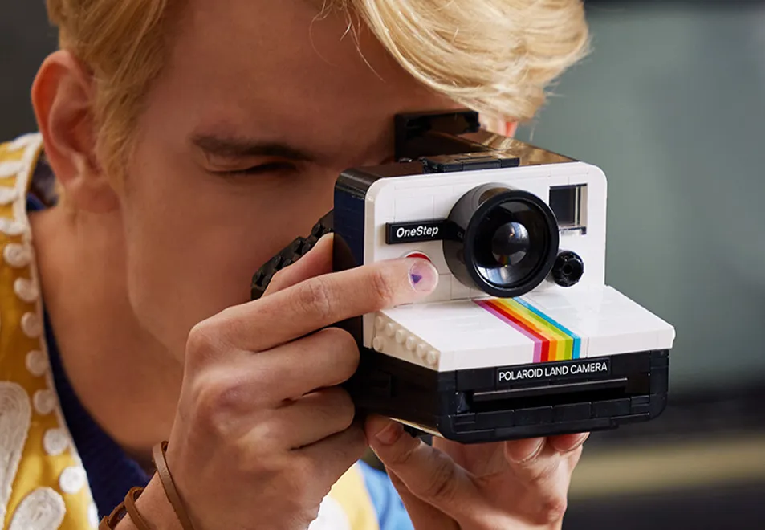
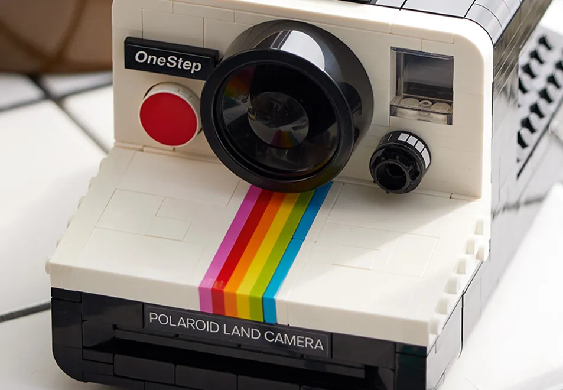
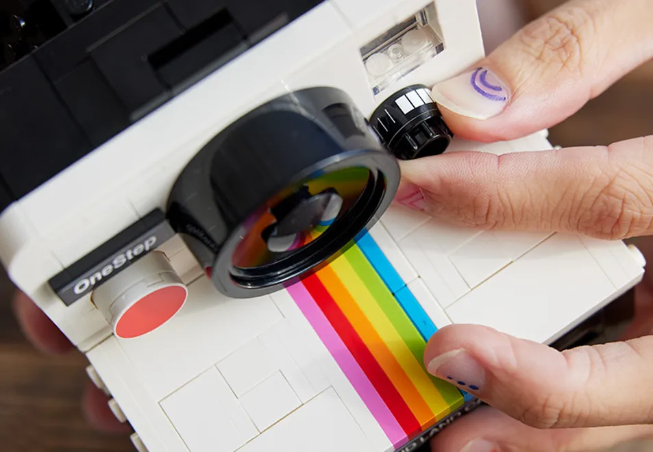
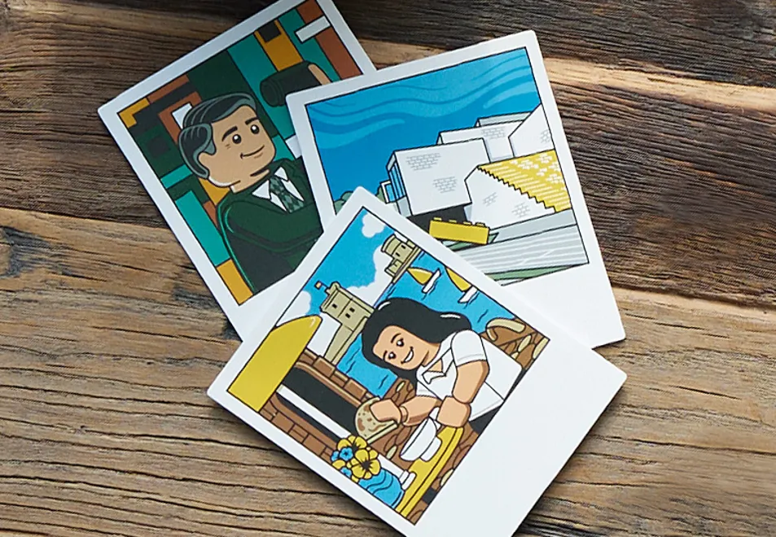
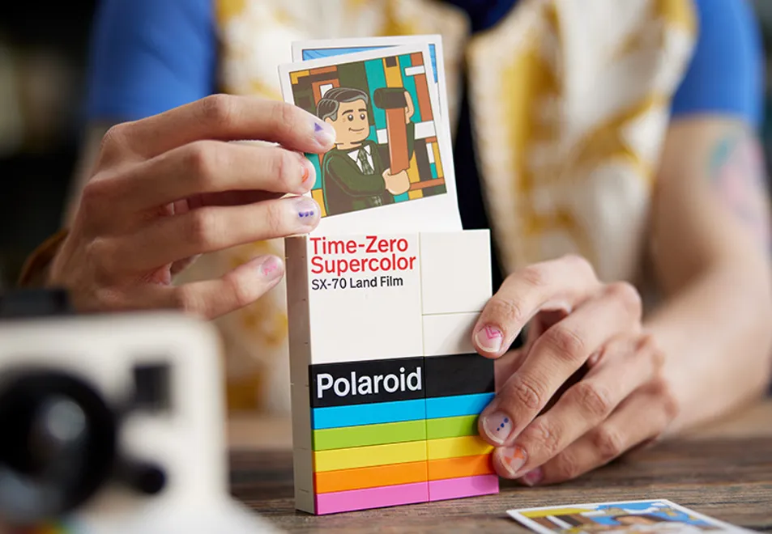
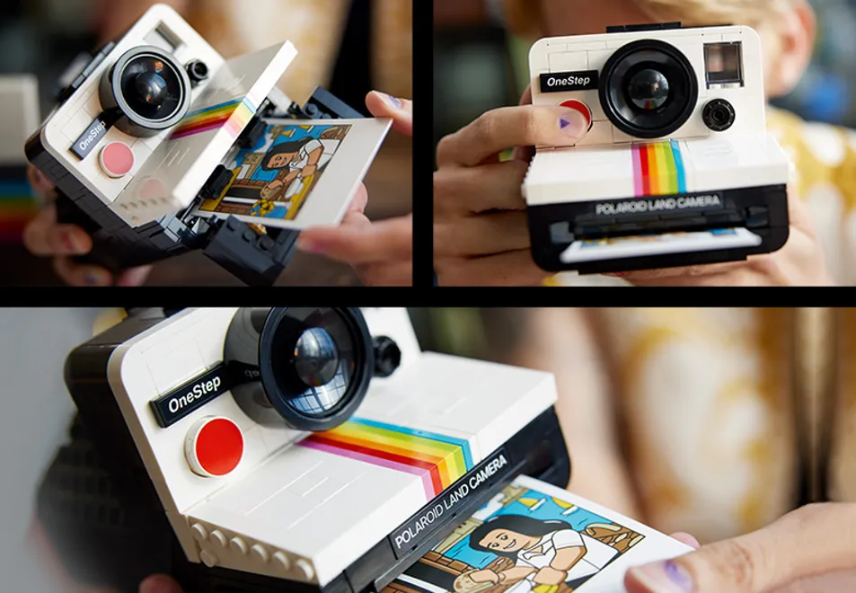

|
Cámara Polaroid OneStep SX-70 |
Enfoca el objetivo y recrea un diseño clásico. El set LEGO® Cámara Polaroid OneStep SX-70 (21345), un modelo coleccionable de gran realismo, es el mejor regalo para fotógrafos y amantes de las cámaras.
Disfruta de buenos momentos reproduciendo sus icónicos detalles, como el visor, el espectro de colores y la rueda de compensación de exposición, y coloca pegatinas con motivos gráficos llenos de autenticidad. Construye un cartucho de película Polaroid Time-Zero Land Film, que contiene 3 “fotos” ilustradas, entre ellas una de Edwin H. Land, inventor de la Polaroid. Elige una foto, cárgala en la cámara y pulsa el disparador rojo para que salga, ¡como si fuera de verdad!
Las instrucciones, disponibles en la caja y en la app LEGO Builder, te guían en cada paso de la absorbente experiencia de construcción creativa. Este modelo LEGO Ideas forma parte de la cuidada colección de sets LEGO Adults de primera calidad. Sea cual sea tu pasión, hay un proyecto de construcción esperándote.

- Set LEGO® coleccionable ideal como regalo nostálgico para fotógrafos: Crea tu propia réplica construida con ladrillos de la emblemática cámara Polaroid OneStep SX-70 con este set LEGO (21345) para adultos
- Regalo para amantes de la fotografía y las cámaras: Incluye el visor, el espectro de colores, la rueda de compensación de exposición, una pegatina en la que se lee “Polaroid Land Camera” y pegatinas con la leyenda “OneStep” o “1000” para elegir
- Cartucho de película construible Time-Zero Supercolor SX-70 Land Film: El cartucho contiene 3 “fotos” ilustradas de Edwin H. Land (el inventor de la Polaroid), LEGO® House y la hermana del fan diseñador, que inspiró esta creación
- Funciona como un modelo de cámara Polaroid retro real: Carga una de las “fotos” en la cámara y pulsa el disparador rojo para que salga
- Idea de regalo para amantes de la fotografía: Date el gusto de tener este set LEGO® para adultos o conviértelo en un fantástico regalo de cumpleaños o una sorpresa especial
- Guía paso a paso: Incluye un folleto ilustrado con entrevistas al fan diseñador del set y los diseñadores de LEGO® que lo hicieron realidad, además de instrucciones que te guiarán en cada paso de la experiencia de construcción creativa
- La elección de los fans de LEGO®: Este set de construcción coleccionable para adultos forma parte de la variada gama de sets LEGO Ideas, creados cada uno de ellos por un fan diseñador, votados por fans de LEGO y producidos por The LEGO Group
- Exponlo con orgullo: El modelo construible de la cámara Polaroid de este set de 516 piezas mide aproximadamente 9 cm de altura, 9 cm de anchura y 15 cm de profundidad
¿Que trae tu nueva Polaroid?
|

|

|

|
| Cámara Polaroid OneStep SX-70 |
Espectro de colores |
Rueda para compensar la exposición |
| Recrea la inconfundible forma del visor.
| Construye el familiar espectro de colores. |
Gira la rueda. |
|

|

|

|
| 3 “fotos” ilustradas |
Paquete de películas |
Apunta y dispara |
| Incluye fotografía del inventor de la Polaroid, Edwin H. Land.
| Construye un paquete de películas Land Polaroid Time-Zero. |
Carga una “foto” y pulsa el botón rojo para expulsarla. |